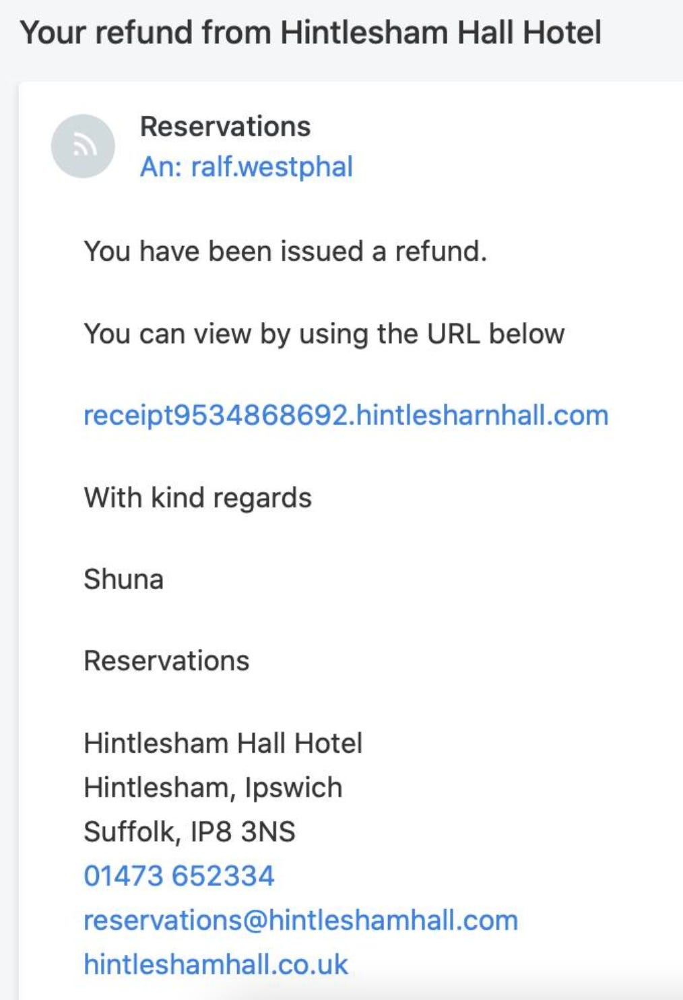
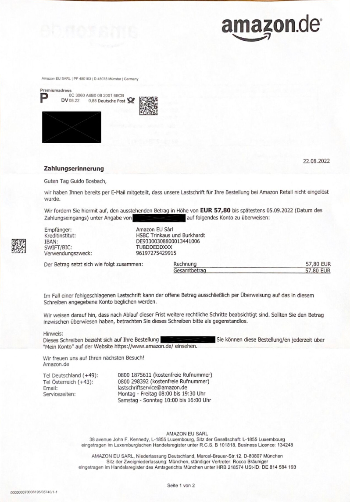

Vorsicht bei Erpressersoftware!
Meinen Cousin hat es erwischt: Sein Unternehmen — ein mittelständischer Metallbauer — ist von Erpressersoftware (ransom ware) lahmgelegt worden. Kurz vor Ende seines Urlaubs ereilte ihn die Hiobsbotschaft seines Prokuristen, dass nichts mehr gehe: nicht im Büro und nicht an den Computern im Homeoffice der Mitarbeiter. Nur eine Werkzeugmaschine, deren PC nicht am Firmennetz hängt, würde noch funktionieren.
Das war ein Schock für meinen Cousin als Inhaber und Geschäftsführer und alle im Unternehmen. Wie sollten Kundenaufträge bearbeitet werden, deren CAD-Zeichnungen auf dem hauseigenen Server liegen? Wie sollten Rechnungen geschrieben, Lieferscheine kontrolliert oder Angebote gemacht werden, die alle mit einer ERP-Software auf dem hauseigenen Server verwaltet werden? Wie sollten Kunden informiert werden, deren Telefonnummern und E-Mail-Adressen im CRM auf dem hauseigenen Server gespeichert sind?
Ob Datenbanken oder Dateien: alles, was auf den Arbeitsrechnern und auf den hauseigenen Servern gespeichert ist, war nicht mehr zugänglich. Die Erpressersoftware hatte es verschlüsselt. Das Unternehmen war von einem Tag auf den anderen ausgeknockt.
Erste Maßnahmen
Während das Unternehmen stillstand, entfaltete mein Cousin zusammen mit seinen Mitarbeitern und vor allem dem IT-Administrator natürlich einige Aktivität: Es wurde geforscht, wer in solchen Fällen helfen kann. Es wurde recherchiert, wie wann welche Behörde informiert werden muss (Polizei, Datenschutz?). Und es wurde vor allem nach Backups der Daten gegraben, die noch unbeeinträchtigt und nicht zu alt waren.
Das waren schweißtreibende, sehr, sehr unsichere Tagen für meinen Cousin. Zum Glück hat die Geschichte aber ein Happy End. Bisher. Denn der IT-Administrator wurde tatsächlich fündig und konnte ein Backup einspielen, das das Unternehmen nicht zu weit zurückwirft. Die Arbeit konnte wieder anlaufen und die Bitcoin-Forderung der Erpresser ignoriert werden.
Doch dieses Entkommen war knapp. Alle im Unternehmen meines Cousins mussten erfahren, dass sie sorglos bis unwissend waren, was die Gefahr von Erpressersoftware angeht. Die ist real. Solche Erpressungen passieren hier und jetzt in deutschen Unternehmen. Ziel sind vor allem Betriebe mittlerer Größenordnung, die einerseits schwach ausgeprägte IT-Sicherheit haben, also angreifbar sind, und andererseits über genügend Mittel verfügen, um der “Entschlüsselungsgeldforderung” nachzukommen.
Was ist Erpressersoftware?
Erpressersoftware ist Software, die Computer befällt und sie temporär unbrauchbar macht.
- Der Befall geschieht entweder durch unwillentliche und unmerkliche Installation, indem Computernutzer Opfer einer Phishing-Attacke werden. Oder Erpresser verschaffen sich von außen Zugang zum Unternehmensnetzwerk und schleusen ihre Schafsoftware selbst ein.
- Unbrauchbar werden Computer dadurch, dass die Daten, die darauf oder auf einem Server gespeichert sind, von der Erpressersoftware verschlüssel wird. Die Daten werden gewöhnlich nicht gelöscht, sondern bleiben am Platz, nur in einer Form, mit der die zugehörige Software (z.B. Textverarbeitung oder Branchensoftware) nichts mehr anfangen kann.
Nachdem die Erpressersoftware die Unbrauchbarkeit hergestellt hat, fordern ihre Urheber alsbald ein Entgeld für die Wiederherstellung der Daten. Dieses Entgeld soll oft in Form von Bitcoins entrichtet werden.
Zahlt das Opfer, werden die Daten wieder zugänglich gemacht — manchmal aber auch nicht.
Zahlt das Opfer nicht, unternimmt der Erpresser nichts oder kann versuchen, die Daten nun auch zu löschen, oder veröffentlicht sie. Die Drohung einer Veröffentlichung hängt oft einer “Entschlüsselungsgeldforderung” gleich an; Namen, Email-Adressen, Kreditkartendaten, Passwörter sind in gewissen Kreisen viel wert.
Für meinen Cousin war eine Veröffentlichung von Daten zum Glück keine Drohung. Sein Geschäft ist B2B; in seinen Datenbeständen ist für Dritte nichts Wertvolles enthalten. Industriespionage ist in seinem Metier auch keine Gefahr.
Aber wie sieht es in Ihrem Unternehmen aus?
Was tun gegen Erpressersoftware?
Der ultimative Schutz gegen Erpressersoftware ist Isolation. Ein Computer, der nicht am Internet ist und auf dem nichts installiert wird, kann nicht befallen werden. Dass Computer — vom Server über den Tischrechner und das Smartphone bis zur Überwachungskamera und anderen Geräten — jedoch isoliert sind oder sein könnten, ist zunehmend illusorisch.
PCs sind mit dem hauseigenen Server verbunden. Sie stehen im Unternehmen oder im Homeoffice oder sind unterwegs. Der hauseigene Server ist womöglich noch mit anderen Servern von Dienstleistern oder Kunden verbunden. Isolation ist keine Option mehr.
Was können Unternehmen also tun, wenn ihre Computer untereinander und mit anderen verbunden sein müssen? Ohne Internetzugriff kommt heute kein Unternehmen mehr aus.
Backup
Die aus meiner Sicht wichtigste Maßnahme ist eine konsequente, häufige Datensicherung. Zwar ist das Kind schon im Brunnen, wenn eine Erpressung läuft und der Zahlung mit Einspielen eines Backup ausgewichen werden kann, doch immerhin ist damit das Problem gelöst.
Meinem Cousin hat das doch noch aufgetriebene Backup viel Geld gespart, wenn auch einige Tage Stillstand und Ungewissheit nicht zu vermeiden waren. Allerdings war sein Entkommen knapp: Die Datensicherung war so eingestellt, dass sie quasi permanent läuft. Es gibt einen hauseigenen Server und parallel laufende Festplatten nur für die Datensicherung. Die IT-Administration hatte das als bequemes und lückenloses Vorgehen eingestuft; es erschien ihr viel besser als das, was mein Cousin vorher manuell jede Woche getan hatte: eine Festplatte anzuschließen, das Backup zu machen und die Festplatte wieder abzuziehen.
Doch damit hatte die IT-Administration nicht nur Erpressersoftware nicht auf dem Radar, sondern auch viel schlichtere Gefahren nicht, z.B. Diebstahl oder Brand.
Nicht nur müssen Sie also konsequent eine Datensicherung machen, die muss auch noch physisch getrennt von den hauseigenen Servern gelagert werden. Ob Sie diesen Aufwand täglich oder wöchentlich treiben, hängt davon ab, wie aktuell Ihre Datensicherung sein soll, wenn Sie sie im Erpressungsfall einspielen. Können Sie mit einem Tag, einer Woche oder einem Monat Datenverlust leben?
Gewissenhaftigkeit
Erpresser suchen sich von außen Zugang zu Unternehmensnetzwerken. Heute, da nun zunehmend Mitarbeiter von unterwegs oder aus dem Homeoffice eingebunden werden müssen, sind Unternehmensnetzwerke zwangsläufig offen. Computer außerhalb des Unternehmenssitzes müssen sich “einwählen” können. Das geschieht gewöhnlich über ein VPN.
Aber auch wenn sich das schon sicher anhört, gibt es genügend Lücken, durch die sich Erpresser einschleichen können. Manche entstehen durch Nachlässigkeit der IT-Administration (Läuft z.B. ein Computer im Tagesbetrieb noch mit Admin-Rechten?), andere liegen tiefer in den verwendeten Betriebssystemen.
Ohne paranoid zu werden und das Unternehmen in einem Sicherheitskorsett zu ersticken, muss Ihre IT-Administration also die Oberfläche des hauseigenen Netzwerkes, die es nach außen bietet, gewissenhaft überprüfen. Sie muss eine Balance finden zwischen Abgeschlossenheit/Schutz gegen Angreifer und Offenheit für wertschöpfende Zusammenarbeit zwischen Innen und Außen.
Leider sehe ich in Unternehmen oft eine Imbalance: Aufgeschreckt durch Medienberichte oder einfach nur aus fürsorglicher Sorgfalt heraus verrammeln IT-Administratoren die hauseigenen Rechner bis zur Unbrauchbarkeit. Das geht eindeutig über die Gewissenhaftigkeit hinaus, die ich meine. Insofern: Im Zweifelsfall lieber etwas offener und flexibler bleiben — und auf eine gute Datensicherung als Schutz setzen.
Vorsicht
Auch wenn die Server durch die IT-Administration schon geschützt sind, kann Erpressersoftware noch über die Tischrechner einfallen. Mitarbeiter erhalten darauf E-Mail und surfen im Internet. Das lässt sich nicht vermeiden; dort lauern allerdings Gefahren.
Ein probates Mittel der Erpresser sind Phishing-Nachrichten. Die enthalten entweder als Anhang Dateien, die bei Öffnung Erpressersoftware installieren. Oder sie verweisen mit einem Link ins Internet, wo solch eine Datei lauert. Oder sie erschleichen Anmeldedaten für das Netzwerk oder einen Dienst, mit denen anschließend wieder Server attackiert werden.
Hier ein Beispiel für eine Phishing-E-Mail, die bei meinem Freund vor einiger Zeit eingetrudelt ist:

Sie ist von der Form her nicht gut gemacht. Perfide war daran, dass mein Freund tatsächlich in dem Hotel übernachtet hatte. Dass von solch einem Absender eine Phishing-Nachricht kommen würde, war kaum zu erwarten. Typischer ist eine solche Nachricht in Ihrer Inbox:
Die Phisher werden immer besser. Sie wechseln sogar die Medien: Manche Opfer zahlen gleich, andere rufen die kostenlose Rufnummer an und geben weitere Daten preis.

Automatisch mit einem Spam-Filter ist ihnen offensichtlich kaum beizukommen. Deshalb müssen Sie selbst Kompetenz entwickeln, Phishing-Nachrichten zu erkennen. Sie müssen Vorsicht entwickeln. Sie dürfen nicht alles glauben, was in Ihrer Inbox nach Aufmerksamkeit heischt!
- Glauben Sie nicht an die Dringlichkeit, mit der man Sie auffordert einen Link zu klicken oder einen Anhang zu öffnen.
- Glauben Sie nicht an Versprechen, die Ihnen gemacht werden, wenn Sie auf einen Link klicken oder einen Anhang öffnen.
- Auch bei offiziellen Absendern glauben Sie nicht, dass ein Problem nur gelöst werden kann, wenn Sie sofort auf einen Link klicken oder den Anhang öffnen. Suchen Sie andere, Ihnen bekannte Wege, um das Problem zu lösen.
Wenn Sie sich der Phishing-Gefahr bewusst sind, wird es mit etwas Übung recht leicht, solche Nachrichten zu erkennen; es gibt immer Merkmale, die sie verraten, weil sonst der Phishing-Zweck nicht erfüllt werden kann. Aber bleiben Sie vorsichtig! Wenn Sie dazu Fragen haben, melden Sie sich gern.
Entfernen
Es gibt auch Anti-Erpressersoftware. Anti-Virus-Programme bemühen sich darum, solche Schadsoftware auf Abstand zu halten. Doch ich bin schon seit Jahren im Zweifel, ob diese Programme mehr nützen als schaden. Ich kann mich eines gewissen Verdachts nicht erwehren, dass sie das Problem vergrößern helfen. Allemal sind mir die Erfahrungen in guter Erinnerung, da Anti-Virus-Programme die Arbeit unter Windows merklich behindert haben.
Außerdem soll es Tools geben, die wohlbekannte Erpressersoftware nach Befall unschädlich machen und Ihre Daten wieder zugänglich. Inwiefern Ihnen das nützt, wenn das Kind im Brunnen ist, kann ich nicht sagen. Ist die Schadsoftware dann bekannt? Gibt es ein “Gegentool”? Kommen Sie an dieses Tool auch heran? Kann es die Daten vollständig wiederherstellen? Das sind viele Fragen auf deren positive Antwort ich mich im Ernstfall nicht verlassen würde.
Besser, Sie investieren in Backup, Gewissenhaftigkeit und Vorsicht.
Outsourcen
Soweit die üblichen Empfehlungen für den Umgang mit Erpressersoftware. Ich möchte allerdings noch eine hinzusetzen: Lagern Sie IT-Dienste aus.
Hauseigene Server können nur befallen werden, wenn Sie welche haben. Eine IT-Administration kann nur nachlässig sein, wenn sie eigene Server zu verwalten hat. Warum dieses Risiko eingehen?
Datenspeicher in der Cloud sind in vielfältiger Form vorhanden. Nützliche Programme jeder Größenordnung, vom Kalender über E-Mail und Aufgabenverwaltung bis ERP-System sind ebenfalls in großer Zahl im Internet im Angebot.
Ihr Unternehmen sollte genau überlegen, welche Software noch lokal installiert werden muss. Sie sollte auch hinterfragen, ob Daten wirklich nur im Haus gespeichert werden können.
Gerade in Deutschland gibt es immer noch einigen Widerstand gegen Cloudlösungen. Ist das erlaubt (Stichwort DSGVO)? Ist das sicher?
Auf die zweite Frage muss die Antwort zunehmen lauten Ja lauten, denke ich. Ja, Daten in der Cloud zu speichern, ist sicher — allemal sicherer als hausintern mit einer überlasteten IT-Abteilung zu versuchen, dieselbe Sicherheit herzustellen, die Unternehmen im Internet mit viel mehr Manpower erreichen.
Dass mein Cousin z.B. noch hausintern einen Server für E-Mail und Fax betreibt, halte ich für gänzlich anachronistisch. Hätte er auf Microsoft Exchange gehostet bei einem Internet Service Provider gesetzt, wären zumindest seine CRM-Daten nicht unbrauchbar geworden. Weitere Alternativen sind Google Workspace oder Zusammenstellungen von Tools verschiedener Anbieter für Kontaktverwaltung, E-Mail, Kalender, Aufgaben. Ich weiß, das Feld der digitalen Tools ist unüberschaubar. Sprechen Sie mich deshalb gern an; ich unterstütze Sie bei der Evaluation und einem Wechsel in die Cloud.
Inwiefern weniger Daten im Haus und mehr in der Cloud rechtlich für Ihr Unternehmen verträglich ist, ist nochmal eine ganz andere Frage. Auch da geben ich Ihnen gern Input als zertifizierte Datenschutzbeauftragte. Ganz allgemein möchte ich an dieser Stelle jedoch zu Entspannung raten. Es ist oft viel mehr möglich, als sich IT-Administratoren und Rechtsabteilung vorstellen können. Als Gewinn winken mehr Flexibilität, größere Offenheit und sogar geringere Kosten.
Bin ich gegen Erpressersoftware gewappnet?
Mein Cousin hat ein mittelständisches Unternehmen, in dem mehr als 20 Computer befallen waren. Dort hab es für die Erpresser etwas zu holen. Bei mir persönlich ist das nicht der Fall. Ich bin kein offensichtliches Ziel für Softwareerpresser. Dennoch könnte sich bei mir durch übersehenes Phishing etwas einschleichen. Was mache ich dann?
Meine Analyse nach den obigen Kriterien sagt mir:
- Outsourcen: Meine Daten sind komplett outsourcet. Ich speichere nichts exklusiv auf meinem Computer. Ich biete insofern kein statisches Angriffsziel. Datenbanken liegen nicht auf meinem Laptop, sondern in der Cloud bei verschiedenen Services.
- Entfernen: Auf Anti-Virus-Programme setze ich gar nicht. Ich arbeite nur mit Apple-Geräten, die von jeher weniger anfällig für Schadsoftware waren. Das ist keine Garantie, aber ein Baustein meines Selbstschutzes.
- Vorsicht: Ich bin sehr vorsichtig, was Phishing angeht. Mein Auge ist geschult und ich habe nicht das Problem, mit vielen Unbekannten zu kommunizieren, wie es in Unternehmen Sachbearbeiter oft tun müssen.
- Gewissenhaftigkeit: Da ich keine IT-Infrastruktur betreibe, beschränkt sich meine Gewissenhaftigkeit darauf, meine Betriebssysteme ständig aktuell zu halten.
- Backup: Hier sehe ich mich gut aufgestellt. Erstens mache ich alle 10 Tage eine physische Datensicherung auf ein externes Laufwerk, das ich anschließend wieder in den Schrank lege. Von dem kann ich “aus dem Stand” sogar einen neuen Computer in 2 Stunden aufsetzen. Zweitens liegen alle meine Daten in der Dropbox. Das ist der für mich verlässlichste Cloud-Datenspeicher seit mehr als 10 Jahren. Die Dropbox sorgt dafür, dass alle meine Daten ständig in die Cloud gesichert werden. Außerdem bietet Dropbox tagesgenaue Wiederherstellungen von allen Dateien bis 180 Tage zurück.
Ich glaube, ich bin gewappnet. Nicht, dass Erpressersoftware mich nicht erreichen könnte. Doch ich fühle mich auch in dem Fall mit meiner Datenhaltungsstrategie durch Backup und Outsourcing gut aufgestellt. Zahlen werde ich nicht; im schlimmsten Fall habe ich einen Ausfall von einem Tag, an dem ich meinen Rechner neu aufsetze und das eine oder andere Backup einspiele.
Wie steht es mit Ihnen und Ihrem Unternehmen? Haben Sie eine Strategie für den Umgang mit der Gefahr von Erpressersoftware? Sie ist real, wie die Geschichte meines Cousins zeigt. Die Einschläge kommen näher…
Dieser Artikel erschien zum ersten Mal in meinem Newsletter bei Substack hier im August 2022. Dort finden Sie auch weitere Artikel und können den Newsletter per E-Mail abonnieren.
Weitere Artikel

Regeln für KI im Office
ChatGPT & Co haben sich schnell in die Herzen und Alltag von vielen Menschen im Berufs- und Privatleben gespielt. Diese neuen Werkzeuge eröffnen uns viele Chancen, nicht nur effizienter zu werden, sondern auch kreativer. Aber …

Digitale Tools für Zusammenarbeit im Office
E-Mail, Digitale Ablage und eine Branchensoftware sind schon lange nicht mehr genug für effiziente Zusammenarbeit. Doch bevor Sie sich in einem Dschungel an digitalen Werkzeugen verlieren, sollten Sie sich über die Systematik …